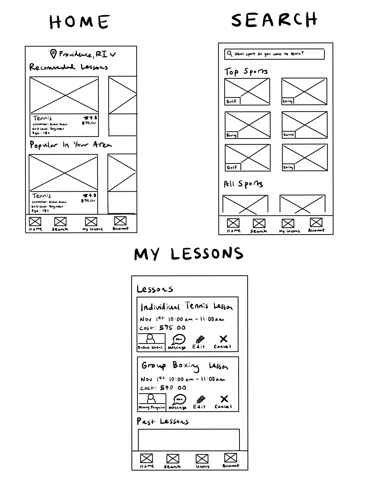
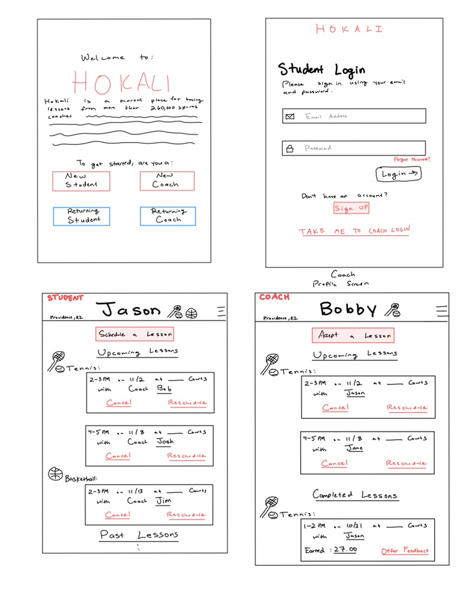
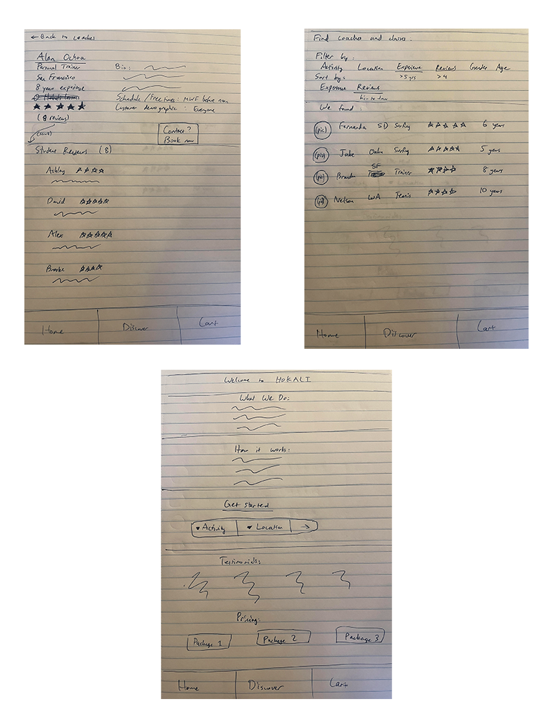
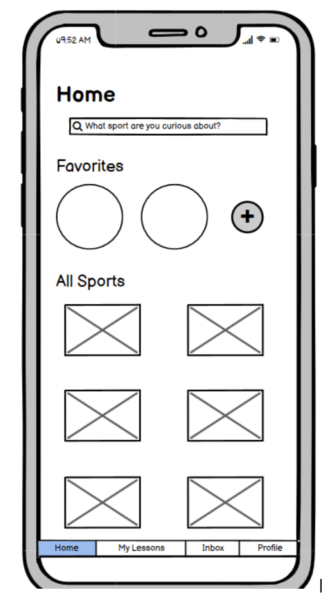
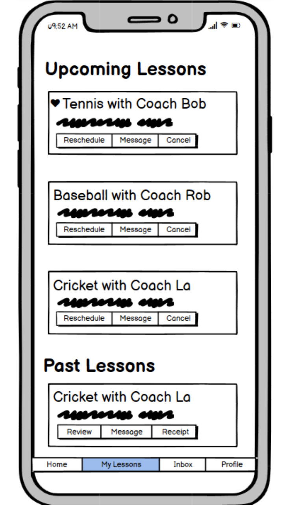
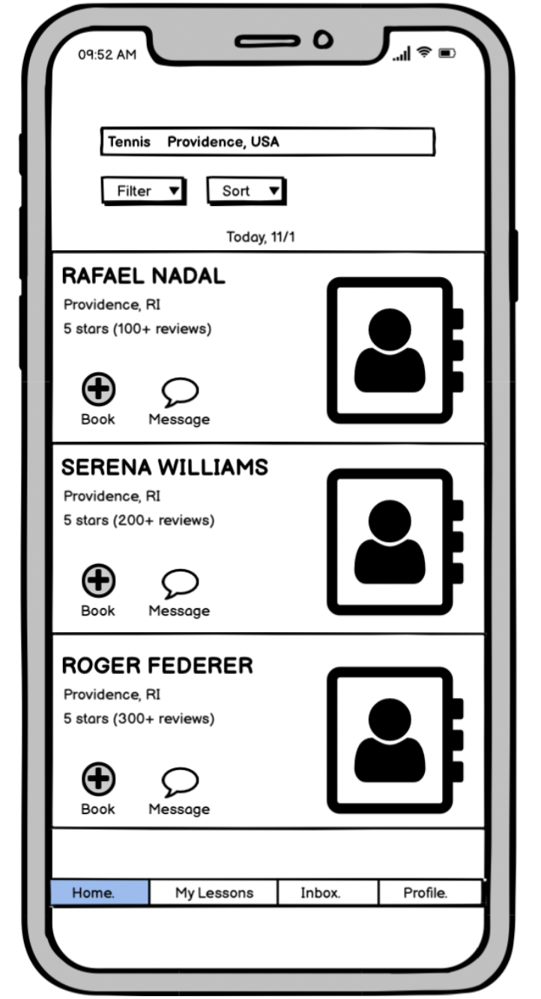
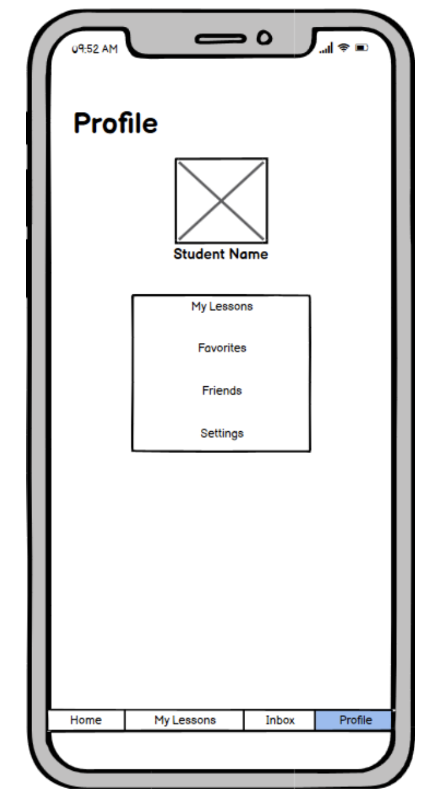
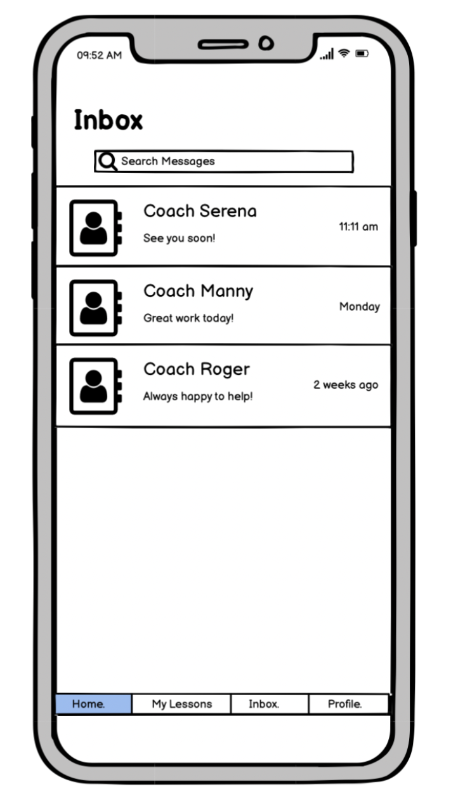

Hokali Iterative Design
Interactive Figma Prototypes + Mockup Critiques + User Testing
Part 0: Project Motivation and Overview
In this project, three other team members and I explore iterative design, a process integral to UI/UX. We browsed through the YCombinator Startup Directory to find a startup that seemed interesting to us and designed an interactive interface, using the startup's mission statement as the central focus for our design ideas. The iterative design process that we adopted consisted of five main parts: (1) hand-sketching ideas of the interface, (2) creating an interactive, high-fidelity prototype in Figma, (3) receiving and implementing feedback from peers (4) conducting user testing on a final, revised prototype via UserTesting.com, and (5) contacting the start up for their thoughts.
About Hokali
The startup that we chose is called Hokali and is a platform designed to facilitate booking sports lessons with local coaches. We chose to design a mobile application interface to address this startup’s goals. Users of this interface are likely athletes or people who are active and constantly on-the-go and would prefer to view and update their bookings directly on their mobile device rather than a PC or tablet. Additionally, in general, people do not bring PCs around with them all the time and would benefit from an easy-to-use mobile interface when needing to book lessons quickly or message their coach on the way to a lesson.
Part 1: Sketches
Before starting our wireframes and hi-fi prototype work, each of our group members sketched their ideas for a few key screens of the Hokali mobile app:
Sketch 1

Sketch 2
Sketch 3
Sketch 4
Wireframes
The next step of the process was to combine our sketches into lo-fi Balsamiq wireframes for the key screens of the app. While creating these combined wireframes, we made the following design decisions:
- We wanted users to be able to search immediately when they entered into the app so we incorporated the search bar on the homepage where users would ideally search by sport.
- We wanted users to be able to favorite certain sports and/or coaches that they could easily access and rebook.
- We wanted sports and favorites to be represented by images that would improve the overall look of the app.
- We wanted users to be able to have “friends” on the app to involve a social aspect to the app.
- We wanted users to be able to access various personalized information via the profile tab.
- We wanted users to be able to get and stay in contact with their coaches both before and after having a lesson with them.
- We wanted users to be able to filter and sort by a variety of options when searching - quality of reviews, distance, price, etc.
- We wanted users to be able to view any upcoming lessons, along with previous lessons, in one place in a tab called “Lessons.”
Home Screen
Lessons Screen
Search Screen
Profile Screen
Inbox Screen
Part 2: Hi-fi Mockup
Moving on to the main part of the project, we created a hi-fi interactive prototype in Figma:
Part 3: Crit Feedback
After creating this Figma prototype, we participated in a studio crit with other groups to get feedback on our designs. Our main takeaways from this sesssion were:
- Include a seen/unread indicator on inbox
- Add a logo for each page on the app
- Fix the bug where the screen can move around/jiggle unexpectedly
- Provide markers for where to move the sliders (min/max) on filter page
- ‘Back to results’ button should be renamed to be more consistent
- Make the cancel button stand out by possibly using a different color
Part 4: User Testing Methods
Using the feedback we got from our studio crit, we created another iteration of our prototype before engaging in more formal user testing with anonymous testers from UserTesting.com. To guide these testing sessions, we gave the users the following overall task and subtasks:
Overall Task
Hokali allows you to book sports lessons with coaches online. Imagine you’re trying to improve your tennis skills and want to use Hokali. Think aloud as you navigate through the app!
Subtasks
- Check your unread messages
- View your upcoming and past lessons
- Search for a lesson
- Find out what options you can filter the results by
- Read Coach Serena’s bio and past reviews
- Book a 9am lesson today with her
Expected Steps for Completion
Ideally, we expected users to complete the subtasks in the following steps:
- Click Inbox in navbar
- Click My Lessons in navbar
- Click Explore in navbar
- Click search bar on Explore page
- Click filter button on search results page
- Click Coach Serena’s profile
- Read Coach Serena’s reviews at bottom of page
- Click back button
- Click book button in Coach Serena’s result
- Select 9am lesson time
Post-test Questions
To keep it simple, we asked our users two questions after they completed our tasks:
- What frustrated you most about this site?
- What did you like about this site?
User Testing Results & Analysis
Results
We received user testing videos from three different users:
-
User 1: probablydead, 35 - Female - $100,000-$124,999 - United Kingdom
-
User 2: ChronicReader, 36 - Male - $60,000-$79,999 - United States
-
User 3: BoBo2016, 34 - Female - $175,000-$199,999 - United States
Analysis
The UserTesting results confirmed our conceptual model of the prototype in the context of the task we gave. We asked the users to navigate through various pages of our app (inbox, history, search results) before finally arriving at a lesson booking confirmation with a specific coach at a specific time, mimicking what we believed a reasonable real-life usage of Hokali would look like. Because we discussed and experimented with the usability of our prototype extensively and since our feedback from the studio crit session was overall quite positive, we expected users to have a relatively smooth experience with our prototype and task.
The results aligned with our expectations. Users made no errors when navigating through different pages, were not surprised by any strange features or design choices, and all successfully booked a tennis lesson with Coach Serena. They commented that the interface was very familiar, intuitive, and streamlined and also protected the user from errors (‘all roads lead to Rome’). For example, one reviewer commented that they appreciated the fact that even if they happened to misclick (i.e. on the profile page), there were multiple ways to get to their intended destination (i.e. lessons page).
Potential Interface Changes
Using our UserTesting results, we created a list of additional interface changes we could make in the future:
- Labeling all of our buttons and ensuring we have aria labels for increased screen reader accessibility (the filter button was highlighted by one user)
- Adding more pages, specifically Receipt and Checkout
- Adding support for a coach-side perspective
- Adding a loading screen with the logo
Part 5: Contacting Start-Up and Conclusion
We recently reached out to Hokali co-founders for feedback and are waiting to hear back! Overall, we really enjoyed learning about the iterative design process. Though it is tedious at times, taking feedback and criticism from different people is critical for building a comprehensive high-quality final product!